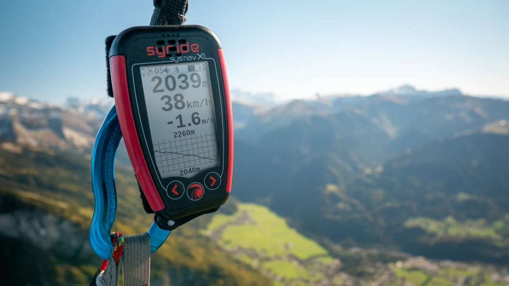
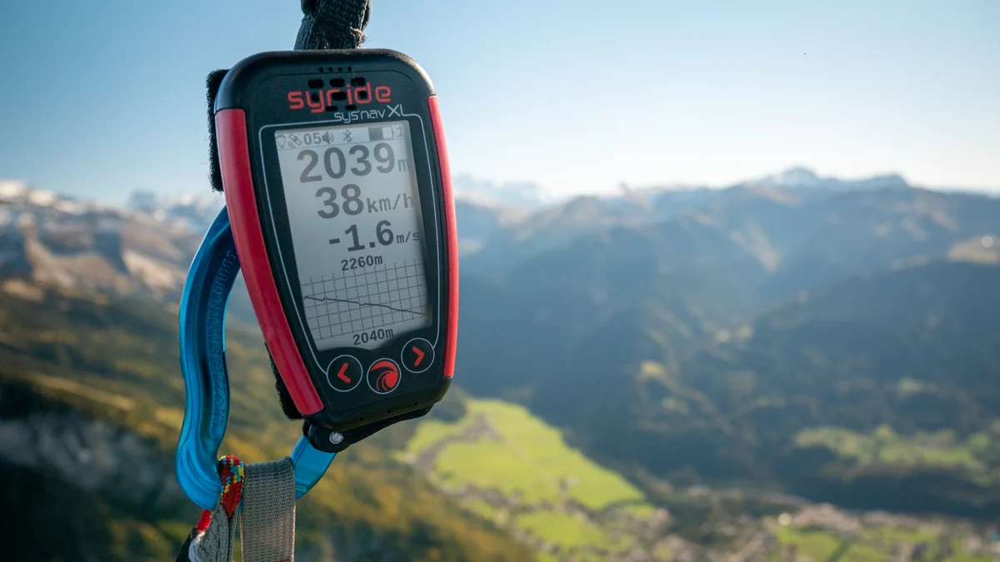

"Design is thinking about the future with the lightness of a breath."
I had the opportunity to collaborate with Syride, a French company well-known in the world of paragliding and free flight, on a graphic design project centered around their unique universe. This collaboration focused on creating a series of T-shirts and stickers tailored to their community of pilots.
The goal was clear visually express the essence of free flight — a unique blend of technical precision, aerial exploration, and pure freedom. To achieve this, I immersed myself in Syride’s world their flight instruments, GPS data, flight curves, visual references, and above all, the passion that drives their users.
Each design was crafted to resonate with insiders while remaining visually impactful, whether on the ground or in the sky. Clean lines, symbols related to flight, subtle nods to navigation and gliding sensations — I blended graphic style with technical codes to create wearable, durable, and recognizable visuals.
This project allowed me to work at the intersection of brand identity, vector illustration, and apparel design, while meeting the expectations of a demanding and passionate audience. A rich creative experience rooted in a one-of-a-kind world.
 

For this first t-shirt, I drew inspiration from the digital world of flight instruments: lines of code, data, matrices... The design takes shape from 0s and 1s, like an image hidden within a stream of data.

For this second design, I focused on navigation and the landscape. Inspired by topographic maps and flight data, the graphic displays GPS coordinates, altitude, speed, and climb rate — like capturing a precise moment mid-flight.
This design builds on the same concept as t-shirt [2], with a slightly different composition.

This sticker was created as a vector illustration. I first built a composition focused on strong contrast between shapes and lines to enhance visual impact. The paraglider, as the main element, is placed in the foreground to guide the eye, with a dynamic orientation toward the Dent de Crolles, integrated as a recognizable topographic detail. The clouds and rays were designed to structure the background without overwhelming the scene. The monochrome palette (variations of red) ensures a cohesive and impactful print, while simplifying production constraints (vinyl cutting, substrate printing). The Syride logo is placed at the bottom of the composition, in light contrast, to ensure readability without disrupting the overall balance.


This sticker is based on a graphic reinterpretation of the “code” aesthetic, inspired by Matrix-style visuals. The entire design was created in bitmap composition, using a grid of green characters on a black background to evoke a computer terminal. The central portrait is generated from a typographic pattern forming a negative silhouette, readable through contrast. The Syride logo, placed at the top left, mimics a system interface (icon, neon color, status bar) to reinforce the visual reference. This design offers a playful twist on the world of flight, drawing from the graphic language of code and hacking.
This visual is based on topographic data and GPS tracks provided by Syride’s tools. I used these elements to create a vector illustration in a wireframe style, similar to a 3D visualization or digital mesh. The paraglider is positioned at the center, directly connected to the generated terrain curves, to highlight both the technical nature and precision of the instruments. The monochrome rendering enhances the schematic, technical look while ensuring clear readability in print.

May this creation awaken your inspiration. (• ◡•)